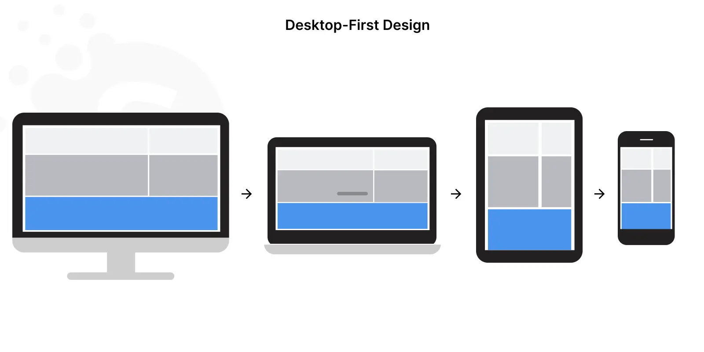
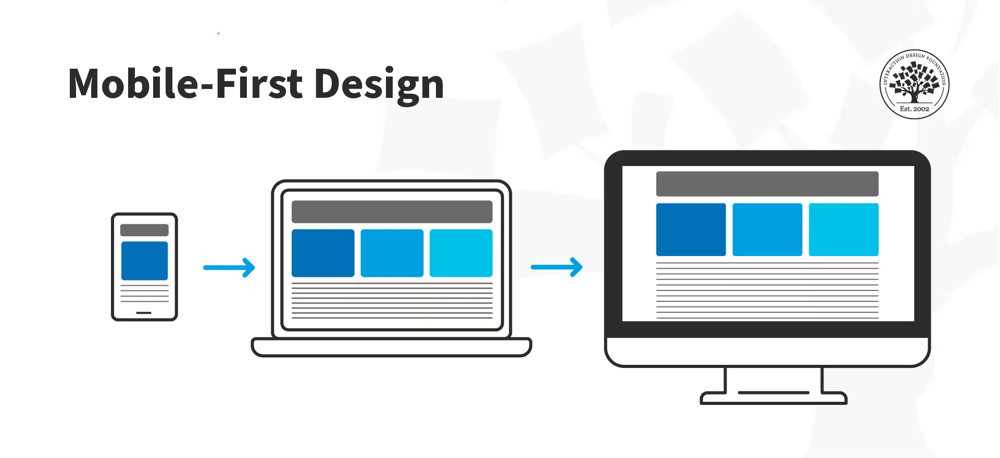
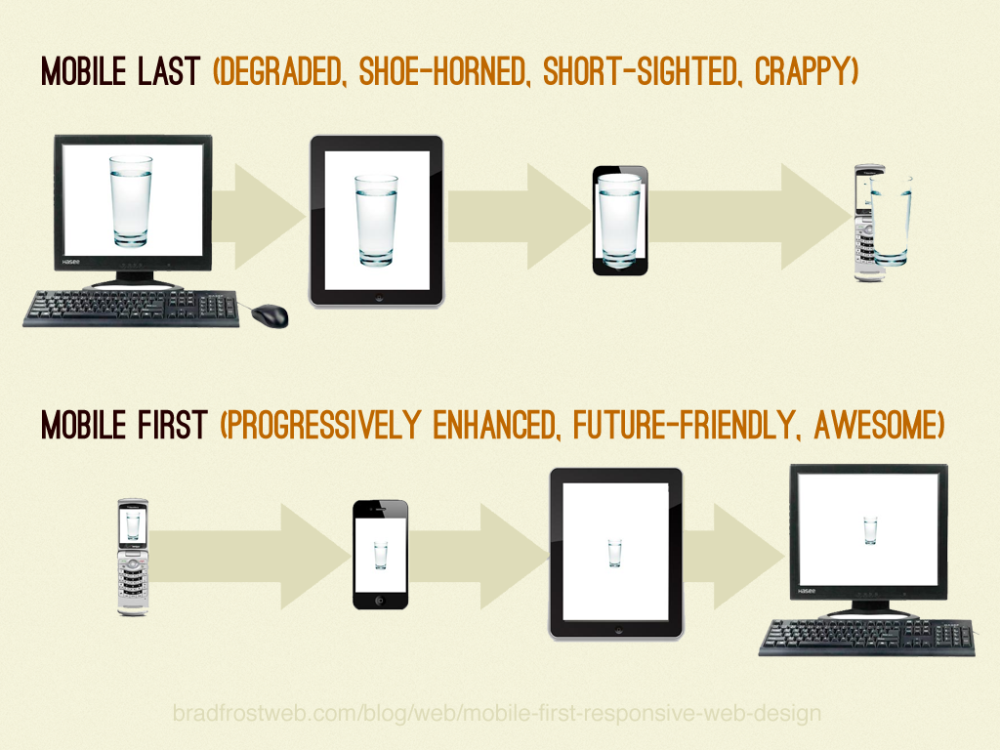
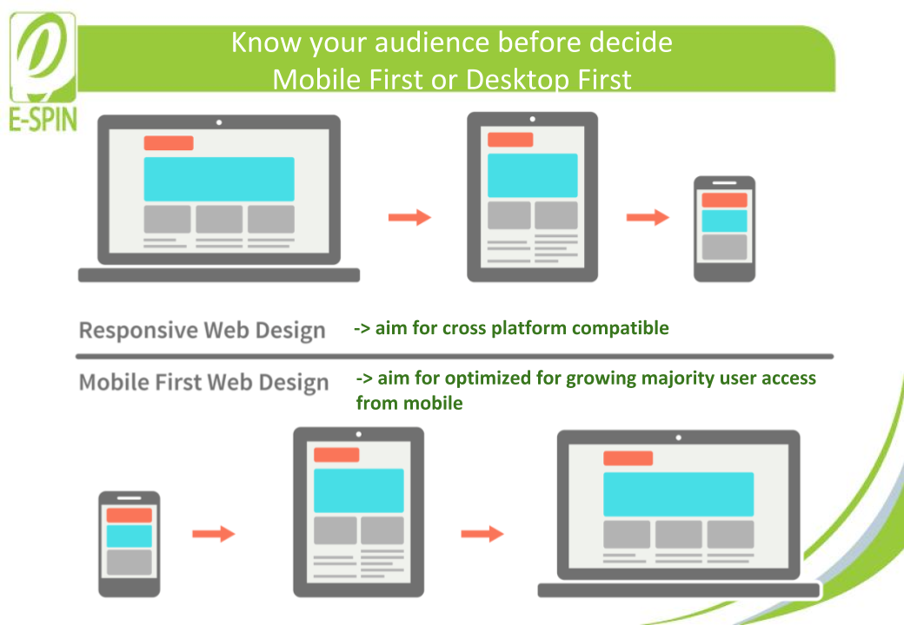
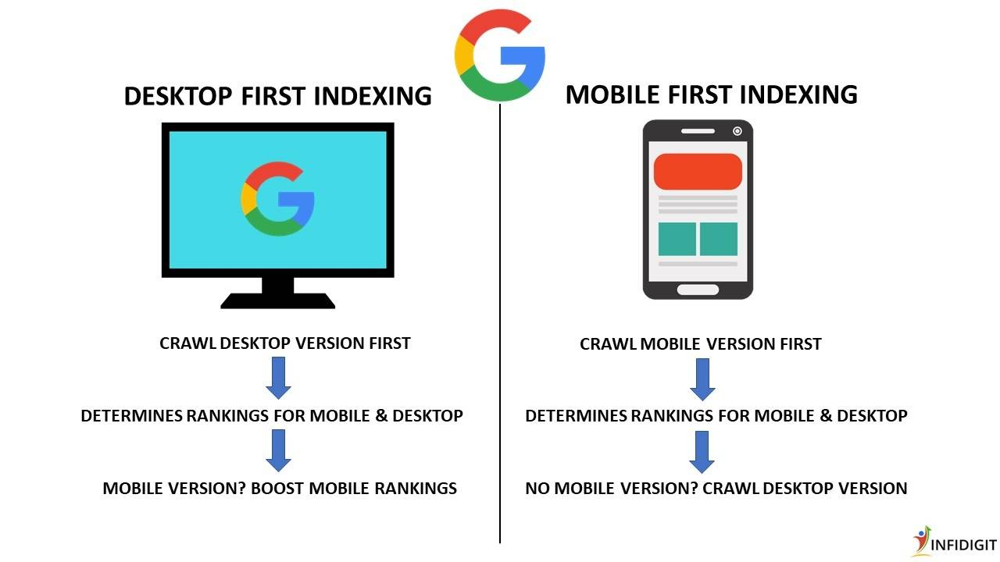
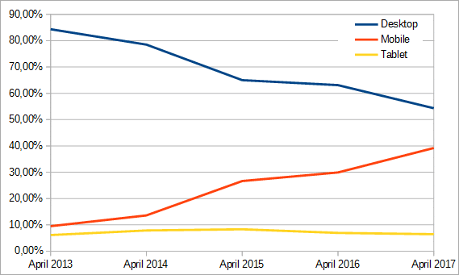
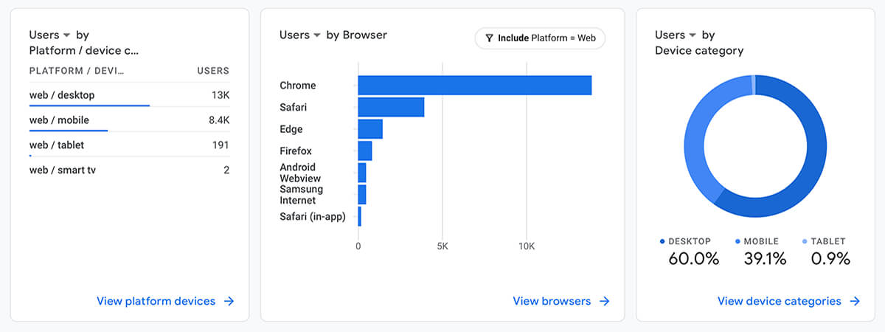
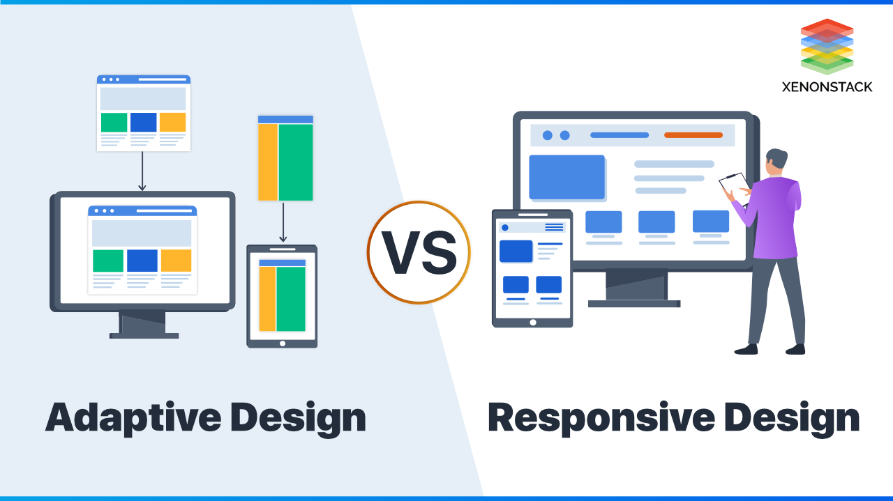

Mobile-First vs.
Desktop-First
Robert Hobelsberger, Felix Kirchner, Quentin Kleinert
Gliederung
- Desktop-First
- Mobile-First
- Vergleich & Trends
Beschreibung

- Desktop- oder Laptop-Erlebnis steht im Vordergrund
- Ausgehend davon Konzepte für kleinere Bildschirme ableiten
- Responsive Retrofitting: nicht-responsive (Desktop-)Website wird im nachhinein
mobiltauglich gemacht
Vorteile
- Größere Design-Flexibilität
- Vollständiges Feature-Erlebnis
- Detaillierte Designs
- Legacy-Nutzer
- Anpassbarkeit
Nachteile
- Schlechtes mobiles Erlebnis
- Eingeschränkte Zukunftssicherheit
- Detaillierte Designs
- Legacy-Nutzer
- Anpassbarkeit
Anwedungszwecke
- Komplexe Webanwendungen
- B2B-Websites
- Forschungsintensive Plattformen
- Portfolio Websites Plattformen
Was ist Mobile First?

- Definition: Fokus auf die Optimierung für mobile Geräte, dann sukzessive Anpassungen an größere Bildschirme.
- Entwicklung startet beim kleinsten Layout (kleinster Viewport).
- Im Zentrum: optimale Lösung für mobile Endgeräte.
Warum Mobile First?
-
Mehr als 80% der Internetnutzer in Deutschland surfen mobil
(seit 2015).
- Smartphones und Tablets dominieren das Nutzungsverhalten.
-
Trends und Benutzergewohnheiten erfordern mobile Optimierung.
Mobile First Prinzipien
- Beschränkung auf das Wesentliche
- Maximale Performance
- Strukturierte Inhalte für schnellen Zugriff
- Design auf kleine Displays anpassen
- Reduktion von Code und unnötigen Funktionen
Vorteile von Mobile First
- Große Reichweite durch mobile Optimierung
- Schnelle und effiziente Entwicklung
- Benutzerfreundliches Layout
- Schnellere Ladezeiten
-
Minimalistisches Design verbessert Lesbarkeit und reduziert
Ablenkung
Nachteile des Mobile First Ansatzes
- Komplizierte Anpassung für Desktops
- Nicht für komplexe Webanwendungen geeignet
- Einschränkungen bei Design und Platzverhältnissen
Herausforderungen von Mobile First
-
Priorisierung von Inhalten und Verzicht auf weniger Wichtiges
- Klare Navigation und klickbare Buttons erforderlich
- Darstellung komplexer Daten (z. B. Tabellen)
- Balance zwischen Informationsfülle und Funktionalität
Mobile First und Kosteneffizienz
- Argumente dafür:
- Reduzierte Entwicklungszeit
- Wartungsfreundlichkeit durch Minimalismus
- Argumente dagegen:
- Kosten für Tools und Tests
- Anpassungsaufwand für größere Bildschirme
Wann ist eine Webseite Mobile Friendly?
- Touch-freundliche Bedienelemente: Große Buttons, keine kleinen Klickziele.
- Lesbarkeit: Kontrastreiche und klare Typografie für kleine Bildschirme.
- Einfachheit: Nutzer erwarten schnelle und intuitive Navigation.
Vergleich und
aktuelle Trends
Flexibilität
Mobile-First
|  |
- Sehr anpassungsfähig, da das Design von Anfang an für kleinere Bildschirme optimiert ist.
- Inhalte und Funktionen werden schrittweise für größere Geräte erweitert.
- Zwingt zu klaren Priorisierungen und einer fokussierten Gestaltung.
- Besonders geeignet für Projekte mit breiter Zielgruppe oder dominanter mobiler Nutzung.
|
Flexibilität
Desktop-First
- Beginnt mit komplexen Designs für größere Bildschirme.
- Erfordert oft mehr Aufwand bei Anpassungen für mobile Geräte.
- Bietet Flexibilität bei anspruchsvollen Features, z. B. Dashboards oder datenintensiven Anwendungen.
|
|
Benutzererfahrung (UX)
Mobile-First
|  |
- Reduzierte Bildschirmgröße führt zu klareren und fokussierten Designs.
- „Weniger ist mehr“: Priorisierung wichtiger Inhalte und Interaktionen.
- Schnellere Ladezeiten durch minimalistische Ansätze verbessern die Nutzerzufriedenheit.
- Herausforderung: Komplexe Inhalte wie Tabellen oder interaktive Elemente schwer umsetzbar.
|
Benutzererfahrung (UX)
Desktop-First
- Bietet ein reichhaltiges, interaktives Nutzererlebnis auf größeren Bildschirmen.
- Ermöglicht den Einsatz detaillierter Layouts und anspruchsvoller Grafiken.
- Gefahr von überladenen Designs auf mobilen Geräten bei unzureichender Optimierung.
|
|
Performance und SEO
Mobile-First
|  |
- Schnelle Ladezeiten und optimierte Inhalte sorgen für bessere SEO-Rankings.
- Google bevorzugt mobil optimierte Seiten seit Einführung des Mobile-First-Index (2018).
- Geringe Datenmengen fördern die Nutzung in Regionen mit langsamen Verbindungen.
|
Performance und SEO
Desktop-First
|
- Potenziell höhere Ladezeiten auf mobilen Geräten durch komplexere Inhalte.
- Kann sinnvoll sein für B2B-Bereich, wo Desktop-Nutzung überwiegt.
|
Wann ist welcher Ansatz sinnvoll?
Mobile-First
|  |
- Für Projekte mit dominant mobiler Nutzung (z. B. Social Media, E-Commerce).
- Gut geeignet für Startups oder neue Projekte mit Fokus auf schnelle Reichweite.
- Ideal, wenn Performance und SEO im Vordergrund stehen.
|
Desktop-First
|  |
- Für datenintensive Anwendungen, Dashboards oder Plattformen mit komplexen Funktionen.
- Geeignet für B2B-Projekte mit primär Desktop-orientierter Zielgruppe.
- Bietet kreative Freiheit für komplexe Desktop-Layouts.
|
Aktuelle Trends
Progressive Web Apps (PWAs)
|
- Kombinieren Vorteile von Mobile- und Desktop-First-Ansätzen.
- Bieten native App-ähnliche Nutzererfahrung, unabhängig vom Gerät.
- Besonders performant und flexibel, da sie Inhalte an den Nutzerkontext anpassen.
|
Adaptive Design
|  |
- Hybride Lösung mit spezifischen Layouts für verschiedene Geräte.
- Mittelweg zwischen Mobile-First und Desktop-First.
- Kombiniert responsives Design mit gerätespezifischen Optimierungen.
|